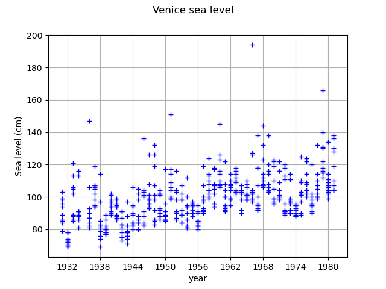
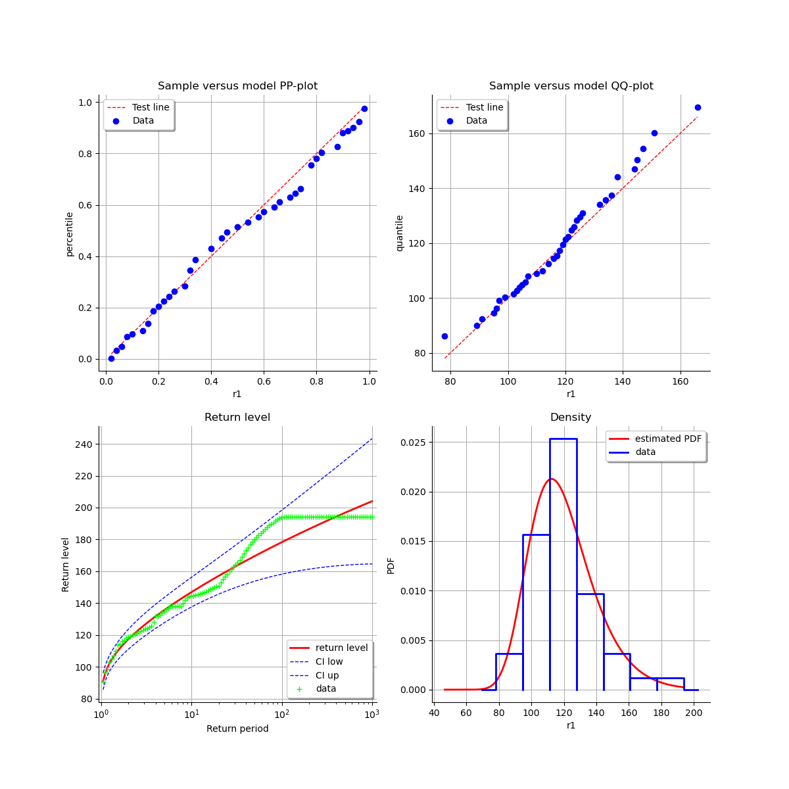

Note
Go to the end to download the full example code
Estimate a GEV on the Venice sea-levels data¶
In this example, we illustrate various techniques of extreme value modeling applied to the annual maximum sea-levels recorded in Venice over the period 1931-1981. Readers should refer to [coles2001] to get more details.
We illustrate techniques to:
estimate a stationary GEV, using the
 -largest annual sea-levels for
-largest annual sea-levels for  ,
,
using:
the log-likelihood function,
the profile log-likelihood function.
First, we load the 10 largest annual sea-levels in Venice. We start by looking at them
through time. Note that for the year 1935, only the largest 6 observations are available.
For simplicity of the example, we removed that year from the data but it could be
used for all the analyses beased on the largest annual sea-levels for  .
.
import openturns as ot
import openturns.viewer as otv
import openturns.experimental as otexp
from openturns.usecases import coles
data = coles.Coles().venice
The column  contains the largest annual sea-levels.
contains the largest annual sea-levels.
print(data[:5])
graph = ot.Graph("Annual maximum sea-levels in Venice", "year", "level (cm)", True, "")
for r in range(10):
cloud = ot.Cloud(data[:, [0, 1 + r]])
graph.add(cloud)
graph.setIntegerXTick(True)
view = otv.View(graph)

[ Year r1 r2 r3 r4 r5 r6 r7 r8 r9 r10 ]
0 : [ 1931 103 99 98 96 94 89 86 85 84 79 ]
1 : [ 1932 78 78 74 73 73 72 71 70 70 69 ]
2 : [ 1933 121 113 106 105 102 89 89 88 86 85 ]
3 : [ 1934 116 113 91 91 91 89 88 88 86 81 ]
4 : [ 1936 147 106 93 90 87 87 87 84 82 81 ]
Stationary GEV modeling from the annual maximum sea-levels
We first assume that the dependence through time is negligible, so we first model the data as independent observations over the observation period. We estimate the parameters of the GEV distribution by maximizing the log-likelihood of the data. We select the first column of the data.
sample = data[:, 1]
Estimate the parameters of the GEV by maximizing the log-likehood and compute the parameter distribution
factory = ot.GeneralizedExtremeValueFactory()
result_LL_max = factory.buildMethodOfLikelihoodMaximizationEstimator(sample)
We get the fitted GEV and its parameters of  .
.
fitted_GEV = result_LL_max.getDistribution()
desc = fitted_GEV.getParameterDescription()
param = fitted_GEV.getParameter()
print(", ".join([f"{p}: {value:.3f}" for p, value in zip(desc, param)]))
print("Max log-likelihood (one max): ", result_LL_max.getLogLikelihood())
mu: 111.090, sigma: 17.340, xi: -0.077
Max log-likelihood (one max): -218.85953988220427
We get the asymptotic distribution of the estimator .
In that case, the asymptotic distribution is normal.
parameterEstimate = result_LL_max.getParameterDistribution()
print("Asymptotic distribution of the estimator : ")
print(parameterEstimate)
Asymptotic distribution of the estimator :
Normal(mu = [111.09,17.3401,-0.0770338], sigma = [2.90936,1.79642,0.0793379], R = [[ 1 0.4502 -0.488149 ]
[ 0.4502 1 -0.438925 ]
[ -0.488149 -0.438925 1 ]])
We get the covariance matrix and the standard deviation of .
print("Cov matrix = ", parameterEstimate.getCovariance())
print("Standard dev = ", parameterEstimate.getStandardDeviation())
Cov matrix = [[ 8.46436 2.35294 -0.112676 ]
[ 2.35294 3.22713 -0.0625576 ]
[ -0.112676 -0.0625576 0.00629451 ]]
Standard dev = [2.90936,1.79642,0.0793379]
We get the marginal confidence intervals of order 0.95.
order = 0.95
for i in range(3):
ci = parameterEstimate.getMarginal(i).computeBilateralConfidenceInterval(order)
print(desc[i] + ":", ci)
mu: [105.387, 116.792]
sigma: [13.8192, 20.861]
xi: [-0.232533, 0.0784657]
At last, we can validate the inference result thanks the 4 usual diagnostic plots:
the probability-probability pot,
the quantile-quantile pot,
the return level plot,
the empirical distribution function.
validation = otexp.GeneralizedExtremeValueValidation(result_LL_max, sample)
graph = validation.drawDiagnosticPlot()
view = otv.View(graph)

We can also use the profile log-likehood function rather than log-likehood function to estimate the parameters of the GEV.
result_PLL_max = factory.buildMethodOfProfileLikelihoodMaximizationEstimator(sample)
The following graph allows one to get the profile log-likelihood plot.
It also indicates the optimal value of  , the maximum profile log-likelihood and
the confidence interval for of order 0.95 (which is the default value).
, the maximum profile log-likelihood and
the confidence interval for of order 0.95 (which is the default value).
order = 0.95
result_PLL_max.setConfidenceLevel(order)
print(result_PLL_max.getParameterConfidenceInterval())
[-0.200118, 0.101776]
We can get the numerical values of the confidence interval: it appears to be a bit smaller with the interval obtained from the profile log-likelihood function than with the log-likelihood function. Note that if the order requested is too high, the confidence interval might not be calculated because one of its bound is out of the definition domain of the log-likelihood function.
try:
print(
"Confidence interval for xi = ", result_PLL_max.getParameterConfidenceInterval()
)
except Exception as ex:
print(type(ex))
pass
Confidence interval for xi = [-0.200118, 0.101776]
Stationary GEV modeling from the largest :math:`r` annual sea-levels
We still assume that the dependence through time is negligible. We estimate the parameters of the
GEV distribution by maximizing the log-likelihood of the data. Now, we want to model more of the
observed extremes than the annual maxima: the additional information contained in the largest
 observations can be used to improve the estimation of the GEV model.
observations can be used to improve the estimation of the GEV model.
Now, we drop the year column to keep only the maxima values.
sample_rmax = data[:, 1:]
print(sample_rmax[:5])
[ r1 r2 r3 r4 r5 r6 r7 r8 r9 r10 ]
0 : [ 103 99 98 96 94 89 86 85 84 79 ]
1 : [ 78 78 74 73 73 72 71 70 70 69 ]
2 : [ 121 113 106 105 102 89 89 88 86 85 ]
3 : [ 116 113 91 91 91 89 88 88 86 81 ]
4 : [ 147 106 93 90 87 87 87 84 82 81 ]
We estimate the parameters from the largest annual sea-levels for  .
For each value, we get the estimated parameters.
.
For each value, we get the estimated parameters.
factory = ot.GeneralizedExtremeValueFactory()
r_candidate = [1, 5, 10]
for r in r_candidate:
estimate = factory.buildMethodOfLikelihoodMaximization(sample_rmax, r)
desc = estimate.getParameterDescription()
p = estimate.getParameter()
pretty_p = ", ".join([f"{param}: {value:.3f}" for param, value in zip(desc, p)])
print(f"r={r:2} {pretty_p}")
r= 1 mu: 111.090, sigma: 17.340, xi: -0.077
r= 5 mu: 117.849, sigma: 13.423, xi: -0.087
r=10 mu: 116.868, sigma: 11.854, xi: -0.108
otv.View.ShowAll()